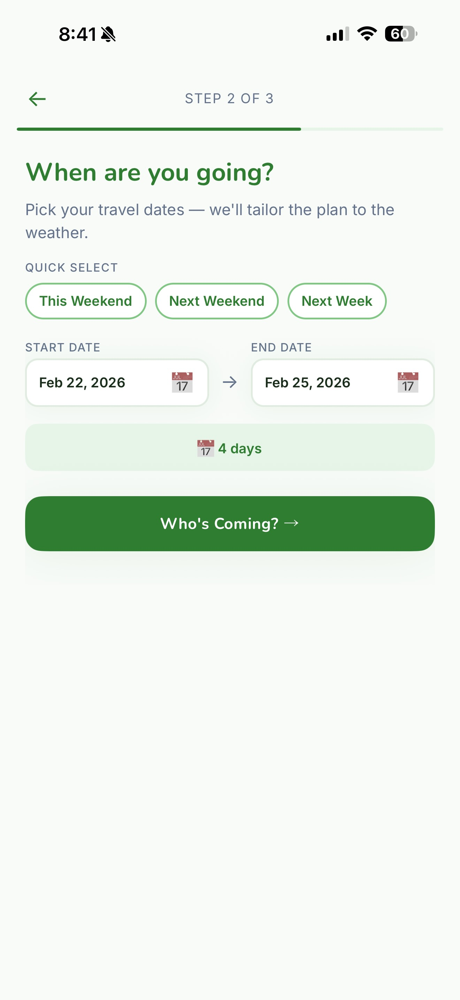
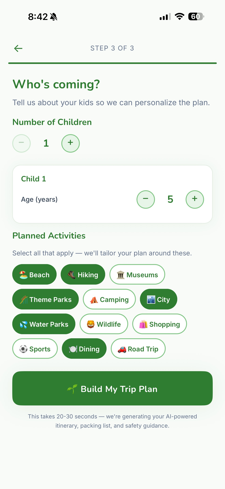
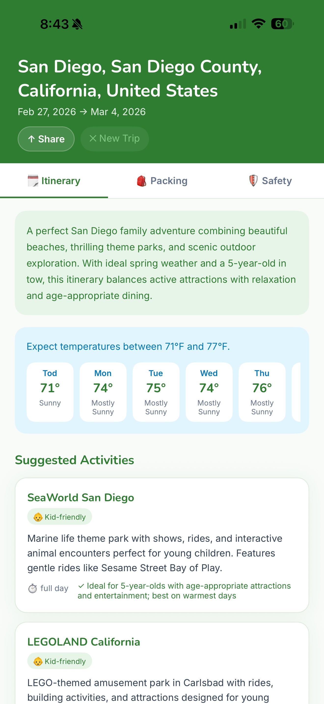
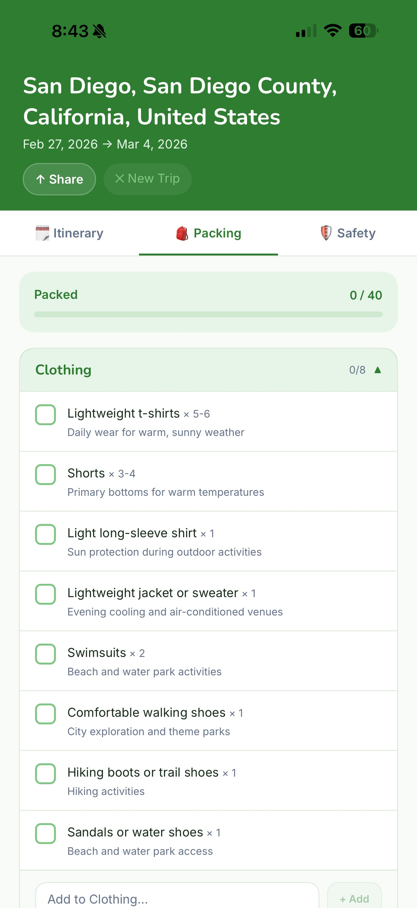
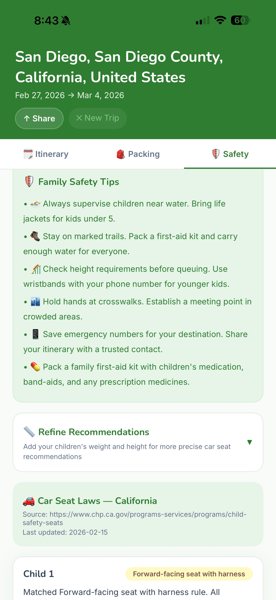
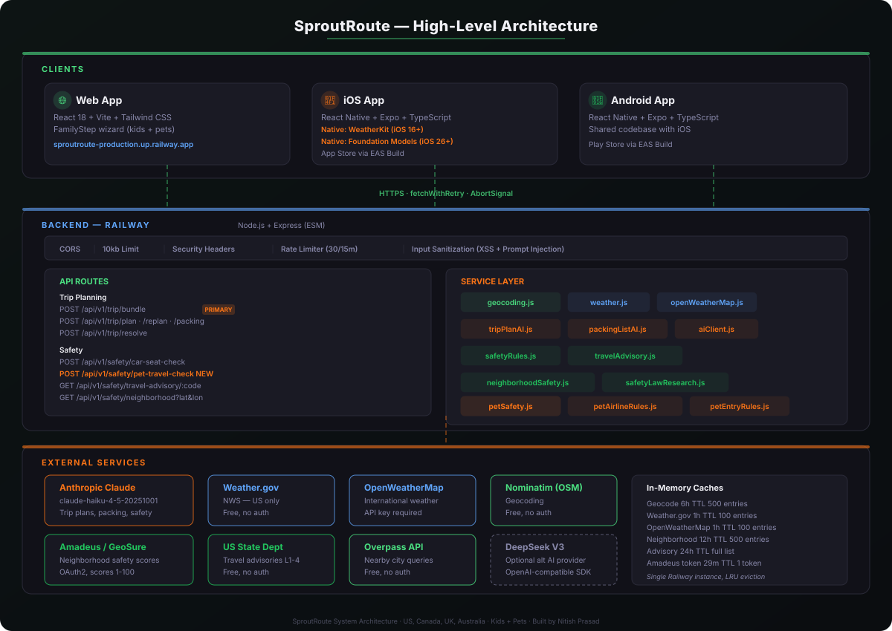
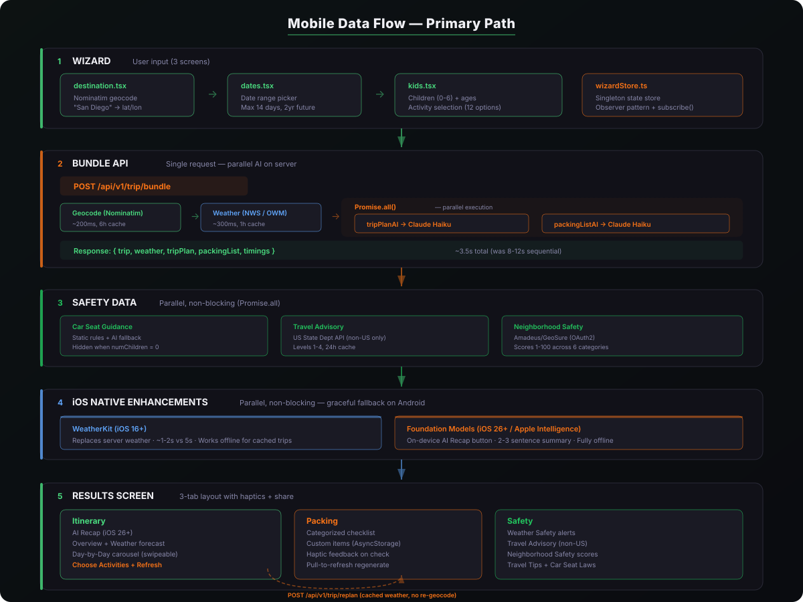
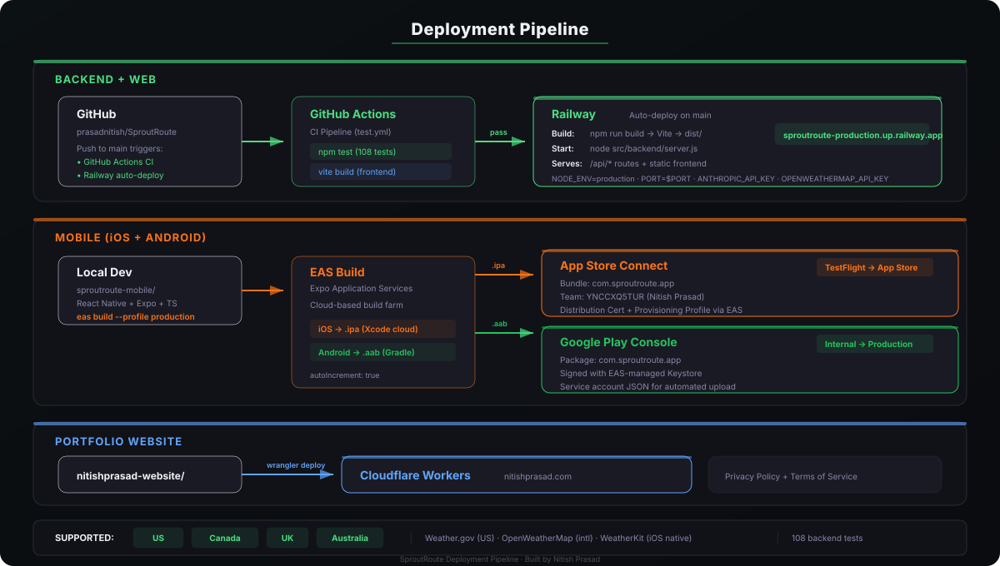

I kept the product narrow enough to finish, but broad enough to feel real and useful.
0→1 product build · web and mobile · live demo
SproutRoute
SproutRoute is the clearest example of my 0→1 execution range. I defined the wedge, sequenced the release, shipped the product across web, iOS, and Android in ten weeks, and kept the scope disciplined enough to finish with quality.
Best read for 0→1 execution range, delivery discipline, and end-to-end product ownership.
Quick Read
What matters most about this build.
The build stayed stable because I treated delivery quality as part of the product, not cleanup work.
Supporting four countries forced the right product and data-shape decisions early.
The product
A family trip planner that feels complete before the trip even starts.
SproutRoute combines itinerary planning, weather, packing, travel advisories, neighborhood safety, and car seat guidance into one product flow. The goal was not to make a generic AI travel toy. The goal was to cover the decisions a parent actually has to make.
What I owned
- Product definition, scope cuts, release sequencing, and delivery plan.
- Full-stack implementation across backend, web flow, and mobile app surfaces.
- API and data model decisions for weather, safety, geocoding, and itinerary generation.
- Testing strategy and deployment discipline across all shipped phases.
Why this matters
The hard part was not generating features. It was deciding what belonged in the first version, what could wait, and how to ship a product that felt complete instead of half-finished.
Scope
- Live web app with iOS and Android builds.
- Weather, safety, itinerary, and packing system in one product flow.
- International support across four countries.
- Deployment, tests, and product case-study site shipped in the same cycle.
Product Proof
The product flow is concrete, not conceptual.
These screens are from the actual shipped flow.
Destination setup
Simple, low-friction entry. The product starts with the actual trip decision, not a long onboarding ritual.

Date range
Date selection drives weather relevance, itinerary timing, and packing recommendations downstream.

Who is coming
Kids’ ages and preferences change the product output meaningfully, so this input had to stay first-class.

Itinerary
The itinerary had to read like something a parent could use, not a generic block of AI text.

Packing list
Packing becomes a better product surface when weather, dates, and kid ages are already in the system.

Safety guidance
This is where the product starts feeling differentiated. Parents want safety answers before they travel, not after.
Executive Summary
The hardest part was not writing code. It was keeping the product honest.
Every week created pressure to add more. The useful decision was to keep cutting back to the core before-trip workflow: where to go, what to do, what to pack, and what to watch out for. That is what let the product ship instead of getting stuck in expansion.
Why it matters
- I can define a product wedge clearly enough to build against.
- I can sequence delivery without losing the thread of the product.
- I can ship something real across multiple clients and data sources on a short clock.
Deep Dive
The delivery and system decisions matter as much as the feature list.
One workflow, not six disconnected tools
Itinerary, weather, packing, advisories, and safety all had to feel like one product journey, not a set of separate tabs glued together.
Parents first
The product keeps asking, “What does a parent still need before the trip?” That is why car seat guidance and safety earned real space.
Scope cuts with teeth
The build shipped because I kept making clear calls on what was phase-two material rather than pretending everything belonged in v1.
Visual polish where it mattered
The product needed enough polish to feel trustworthy without turning into a design detour that slowed shipping.

Architecture
Client surfaces, backend services, and external APIs were designed to support fast feature addition without becoming brittle.

Mobile data flow
The wizard, planner, and result views stay coordinated because the data flow is simple enough to reason about.

Deployment path
Backend, mobile, and portfolio updates were treated as one release system rather than unrelated chores.
9 phases shipped
The phased plan helped keep momentum high while making the product visibly better every cycle rather than waiting for one big finish line.
167 tests
I used the test suite as a release tool, not a badge. It let me move quickly without breaking the core flow every time a new data source landed.
Cross-platform restraint
Web, iOS, and Android support only worked because I stayed disciplined about what needed to be shared and what needed to be platform-specific.
Live demo matters
This is not just a polished story page. There is a product behind it that someone can actually open and try.